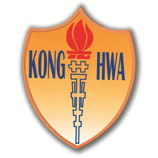
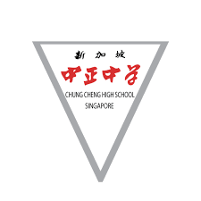
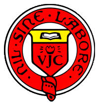

| School | Level | Qualifications |
|---|---|---|
|  Kong Hwa School | Primary | PSLE score: 244 |
| Chung Cheng High School (Main) | Secondary | O'levels: 7 (raw), 3 (nett) |
| Victoria Junior College | Tertiary | A'levels: 90 rank points |
| National University of Singapore | Tertiary | Bachelors of Computing in Computer Science (Honours) |
I enjoyed my time in Kong Hwa School where they nurtured the appreciation of Chinese culture from a young age so that we would understand our roots as Chinese. I was exposed to Chinese calligrpahy and painting as well as Chinese tea art. We were also given opportunities to learn beyond our syllabus with subjects like English literature through books like Charlotte's Web and Lord of the Flies. Overall, I performed well for my PSLE and was able to enter my desired Secondary school as well.
My time in Chung Cheng High School (CCHMS) was very enriching. Similar to Kong Hwa School, I was further exposed to Chinese culture as CCHMS was the centre of excellence for Chinese Culture in the East Zone. There I continued learning Chinese calligraphy with bi-weekly lessons, as well as a subject called 'Appreciation of Chinese Culture' which also consisted of bi-weekly lessons where we learnt about ancient Chinese folklore, Chinese tea art as well as some of Chinese history. We were also exposed to the Malay Language as part of our curriculum. I was part of the Art Club in CCHMS because of my interests in it. There I was given many opportunities to try out different art forms like clay sculture making, street art, watercolour etc. Besides ensuring we are culturally educated, we were also encouraged to engage in physical activities like camps. Our Secondary 3 Resilience Camp was one of the toughest but fulfilling camps we had where we camped in Malaysia in the outdoors. There, we went hiking to a waterfall and engaged in activities like absailing and rock-climbing.
My short 2 years in Victoria Junior College (VJC) was incredibly hectic but fulfilling as well. I was part of VJC's Interact Club which is under Roteract Club Singapore. We participated in many activies and events that contributed back to the community through volunteerism or organising of events. I was given the opportunity to be part of the organising committee for 'Community Affair' in VJC which is an annual event to get the school community to give back to society. I also volunteered in many events like Walk for Rice by NTUC, a Clothes Drive, a Food drive for Foodbank Singapore, etc. Besides, I was extremely proud that I was also able to acheive academic excellence and became one of the students to acheive 7 A'level distinctions.
Currently, I am studying in NUS in the School of Computing. I have been given many opportunities to learn about technology through events like AngelHack, BrainHack and through the modules we take. I am also part of Social Impact Catalyst NUS under a project called IlluminateSG where we hope to spark conversations on pressing social issues for youths through our events and campaigning. In IlluminateSG, I work as the Head of Content Creation for the Marketing team. During my time in NUS, I also interned at DSO during my summer in the first year.